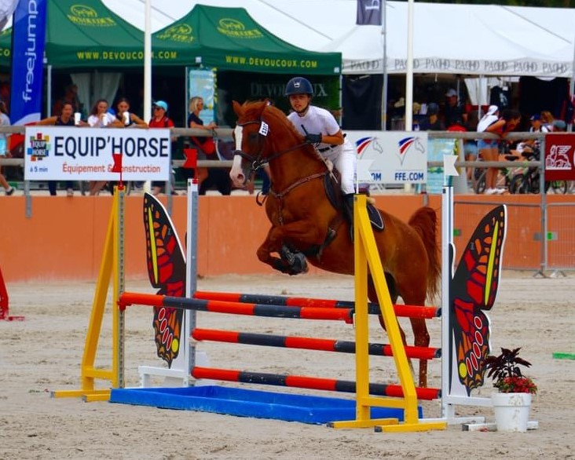
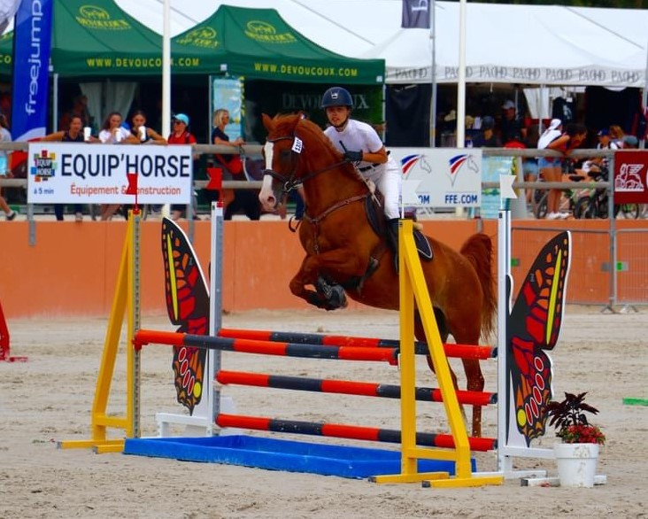

Actualités
Stages d'été !
Camps d'été !
Cette année le MDC vous propose 2 camps d'été !
Un au mois de Juillet et un au mois d'août.
N'hésitez pas à inscrire vos enfants :D
Fête du club 2023 !
Allez on retient cette date: 17 JUIN 2023 à partir de 14H00
Cette année nous fêtons cette fin d'année avec une Ruée du Mas Déguisée !!!!
Attention tous les parents doivent participer pour s'affronter en groupe sur un parcours fait d'embûches, de boue, et.... SURPRISES !!!!!!
Parcours à poneys, buvette etc....
Aperitif offert, repas à réserver, et grosse soirée avec un DJ jusqu'au bout de la nuit !!!!!!
Venez nombreux !!!!!!!!!!!!!!
Lamotte Beuvron Horse-Ball 2023
Le championnat de France de Horseball qui s’est déroulé au Parc Equestre Fédéral de Lamotte-Beuvron (41) s'est achevé après 3 journées de compétition dans une ambiance conviviale et détendue, les équipes participantes se sont affrontées pour défendre leurs chances en vue d’un titre de Champion de France. Le Centre Équestre du Mas de Cournon à Argelliers est fier de ses joueurs, coach et son équipe de supporters. Toutes nos félicitations aux équipes engagées. Les minimes remportent la médaille d’or en s’imposant dignement lors d’une finale à toute épreuve. (Romain, Eva, Mathilde, Manon, Raphaël) Les benjamins terminent 4ème avec une équipe prometteuse qui nous réserve de belles compétitions la saison prochaine. (Léo L, Léo F, Elise, Jeanne et Mohamed) Les poussins remportent la médaille d’argent dans une finale à l’image de nos cavaliers, un match de qualité riche en émotions pour nos petits vice champions de France. (Celya, Maelya, Stella, Madyson, Alban et Tom) La saison prochaine s’annonce encourageante, nous avons hâte de voir évoluer nos graines de champion.
Le planning des stages pour les vacances de noël est arrivé !
Et voici aussi le challenge annuel de noël !
 

Championnats de France de CSO 2022
Petit retour sur l’Open de France, les championnats de France CSO et Complet par équipe à Lamotte-Beuvron où nos cavalières n’ont pas déméritées. Ce fût un super séjour pour ma part ! Célia Peixoto, Olivia Guerry, Célia Ottone et Maëlys Hulin on fourni un effort considérable pour en arriver là . A noter ! Une remontada de folie pour l’équipe complet qui de la 27 ème place finissent à la 11 ème !!! 💪💪 Bravo à Célia Peixoto qui fini son cross incroyablement bien avec seulement moins de 10 sans faute. Bravo à Olivia Guerry qui est sans faute sur l’hippique Célia Ottone atteint la finale de sa catégorie et prend la 13eme place !!!! Maëlys quand à elle fait 4 points le premier jour et sans faute le second avec je pense une belle expérience qui lui a donné de grandes perspectives!!! Vivement l’année prochaine !!!! 🐎🐎🐎